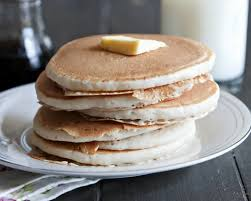

< Back to Home
The Ultimate Fluffy Pancakes

A pancake is a thin, flat, round cake made from starch-based batter (eggs, milk, flour) and fried on both sides, typically on a griddle.
Often eaten for breakfast with syrup, synonyms include hotcake, griddlecake, and flapjack. As a verb, "pancake" means to land an aircraft without wheels or to flatten upon impact.
Ingredients
- 1 1/2 cups all-purpose flour
- 1 teasoppn salt
- 2 tablespoons sugar
- 2 1/2 teaspoons baking powder
- 1 egg
- 3 tablespoons melted butter
- 1 1/4 cups milk
Directions (Steps)
- Beat Egg.
- Stir in buter and milk.
- Combine flour, salt, sugar, and baking powder
- Stir into egg mixture.
- Lightly grease a griddle.
- Heat griddle and drop about 1/4 cup batter onto griddle.
- Spread lightly with a spoon.
- When bubbles begin to appear around outside edge and break, turn with a spatula and cook on other side.
- (I also lift edge a little with the spatula and peek under it to see how it's doing.) You will need to adjust your heat so they do not cook too fast and burn.
- For me, the temperature usually ends up somewhere between medium and medium-high.
That's all. Enjoy your breakfast :)
-Made with heart by oas-